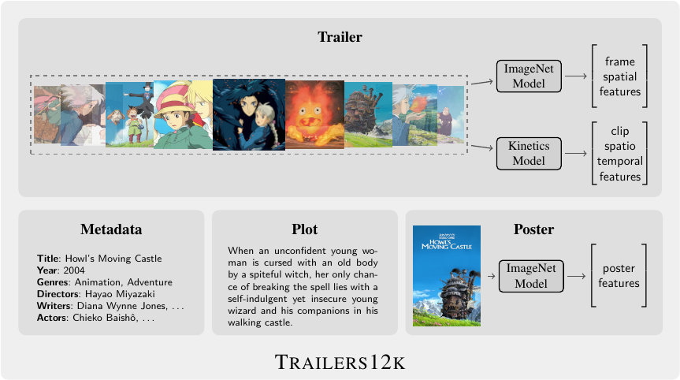
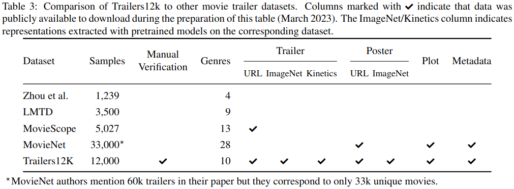

Overview
Trailers12k is a movie trailer dataset comprised of 12,000 titles associated to ten genres. It distinguishes from other datasets by its collection procedure aimed at providing a high-quality publicly available dataset. The following table compares Trailers12k to other similar datasets.

A detailed explanation of the collection procedure, statistics and computing process of trailer representations can be found in the paper Improving Transfer Learning for Movie Trailer Genre Classification using a Dual Image and Video Transformer.
This dataset is an updated and polished version of Trailers15k. In addition to manually-curated movie trailers, Trailers12k provides Kinetics video clip-level representations, ImageNet poster representations and rich metadata.
Data
All data is available on Zenodo and summarized in following table:
| Content | Files |
|---|---|
| IMDb metadata & Youtube ids | metadata.json |
| Trailer representations |
trailers_i_shufflenet_fpc24.zarrtrailers_i_resnet_fpc24.zarrtrailers_i_swin_fpc24.zarrtrailers_k_shufflenet_fps24_fpc24.zarrtrailers_k_r2plus1d_fps24_fpc24.zarrtrailers_ik_swin_fps24_fpc24.zarr
|
| Poster representations | posters_i_swin.zarr |
| MTGC evaluation splits | mtgc.csv |
Trailer Representations
The following table describes trailer image (frame-level) and video (clip-level) representations:
| ImageNet-1k | Kinetics-400 | Backbone | File | |
|---|---|---|---|---|
| Frame-level | ✔ | 2D ShuffleNet-V2-1x | trailers_i_shufflenet_fpc24.zarr |
|
| ✔ | ResNet50 | trailers_i_resnet_fpc24.zarr |
||
| ✔ | 2D Tiny Swin-Transformer | trailers_i_swin_fpc24.zarr |
||
| Clip-level | ✔ | 3D ShuffleNet-V2-1x | trailers_k_shufflenet_fps24_fpc24.zarr |
|
| ✔ | ResNet (2+1)D | trailers_k_r2plus1d_fps24_fpc24.zarr |
||
| ✔ | ✔ | 3D Tiny Swin-Transformer | trailers_ik_swin_fps24_fpc24.zarr |
Representations are stored with zarr. After extraction, a trailer can be loaded with the following code:
import zarr
z = zarr.open('trailers_ik_swin_fps24_fpc24.zarr', mode='r')
num_features = z.attrs['num_features']
arr = z['tt0347149']
arr.shape, arr.dtype # ((96, 768), dtype('float32'))
You can see a full implementation of a Pytorch Dataset in the DIViTA repo.
MTGC Evaluation
trailers12k_mtgc.csv provides a stratified three-fold evaluation split for the multi-label genre classification task with the following columns.
mid: movie identifier.action,adventure,comedy,crime,drama,fantasy,horrorromance,sci-fi&thriller: genres as binary labels.split0,split1&split2: subset to which the movie belongs in the split (0: training, 1: validation and 2:test).
The following snippet loads movie ids and genres of the validation subset in the third split:
Citing
If you find this work useful in your research, please consider citing.
@article{Trailers12k-2023103343,
title = {Improving Transfer Learning for Movie Trailer Genre Classification using a Dual Image and Video Transformer},
journal = {Information Processing & Management},
volume = {60},
number = {3},
pages = {103343},
year = {2023},
issn = {0306-4573},
doi = {https://doi.org/10.1016/j.ipm.2023.103343},
url = {https://www.sciencedirect.com/science/article/pii/S0306457323000808},
author = {Ricardo Montalvo-Lezama and Berenice Montalvo-Lezama and Gibran Fuentes-Pineda},
keywords = {Multi-label classification, Transfer learning, Trailers12k, Spatio-temporal analysis, Video analysis, Transformer model},
}
People
Please feel free to contact us if you have questions.